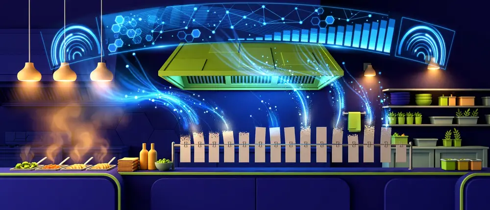
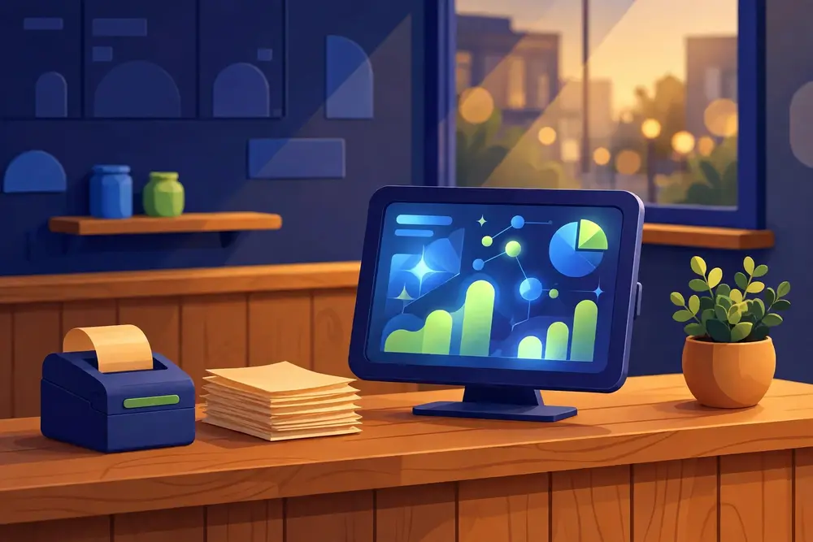
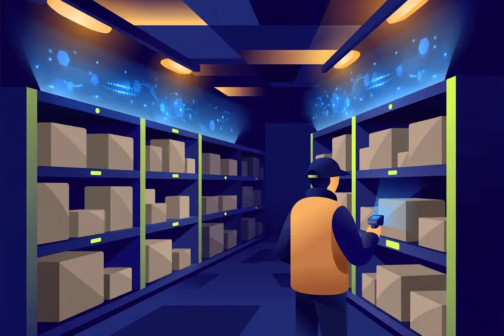
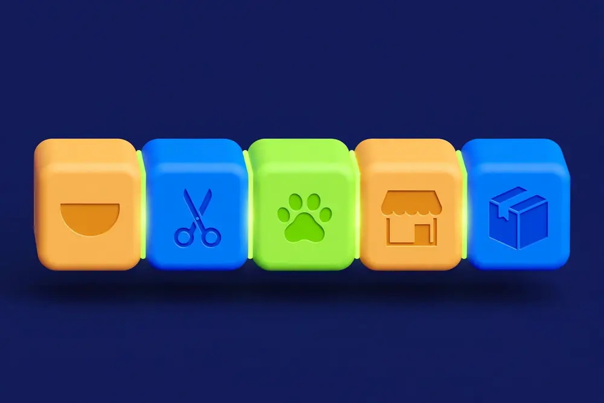
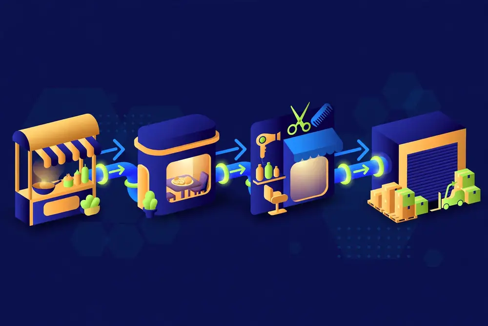
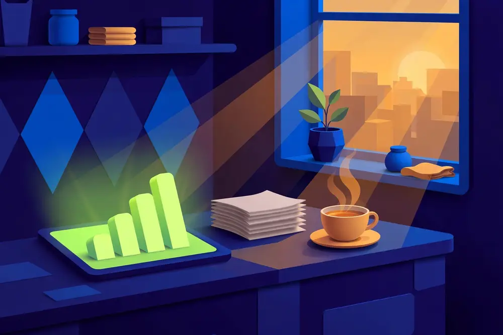
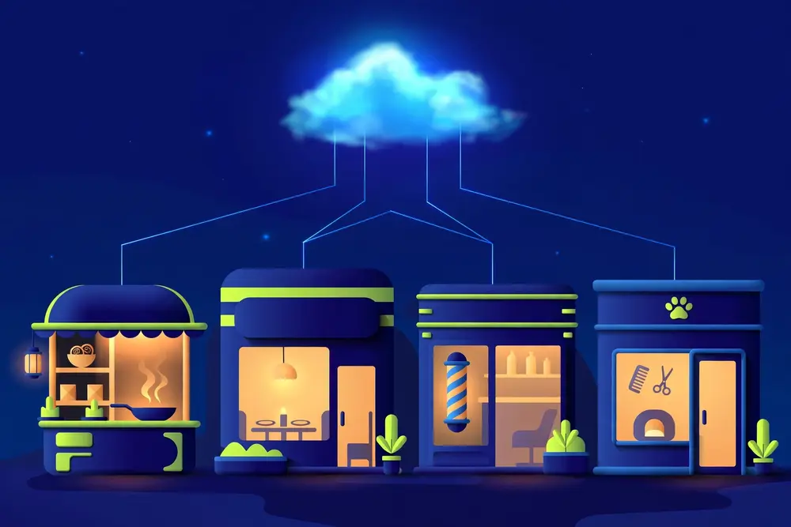
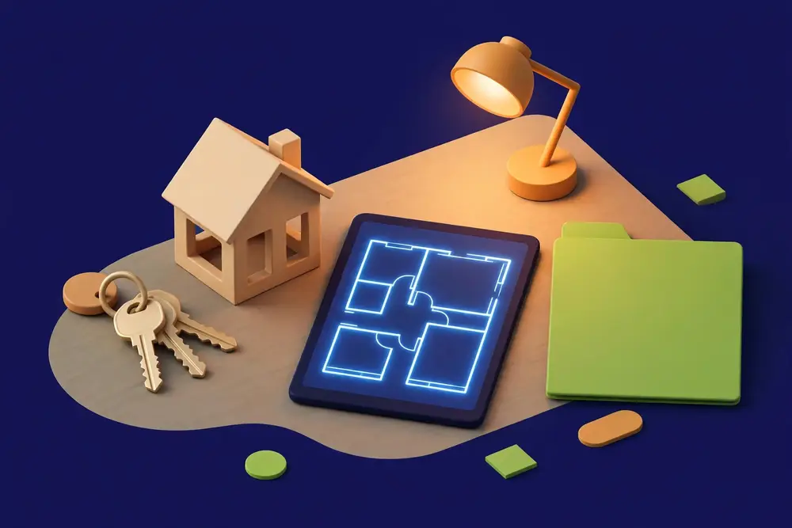

🤖
AI 系統
重複的判斷、登記與對帳，交給系統做。現場的人專心做只有人能做的事：招呼客人、顧好品質。
AI SYSTEMS
從第一線，長出一套系統

他的履歷不在辦公室裡，是在現場。出餐口的節奏、盤點表的落差、帶看行程裡重複的確認——這些費工的環節，就是他做系統的起點。
王俊甫在餐飲業做了 10 年。點餐、結帳、出單、日結，同一套動作每天重複幾十次，哪裡卡、哪裡容易錯，他比誰都清楚。
後來 5 年不動產業務，加上倉儲管理實務，他又看到另一種現場：預約、會員、進出貨與盤點，流程一多，人工登記的落差就跟著來。
所以他做的系統不從功能清單開始，先從現場開始。先看人怎麼做事，再把費工的環節交給系統——這是他跟一般系統開發最大的不同。
點餐、收銀、出單、日結，每天在現場跑流程。
預約、帶看、會員往來，流程一多就知道哪裡會漏。
進出貨、品項、盤點，人工登記的落差親手量過。
把三種現場的經驗，收進一套模組化商用管理系統。

櫃台上的 POS 平板：點餐、結帳與日結，同一台機器接起來。

倉儲盤點：進出貨與庫存，掃一下就對得上。
他的方法只有一句話：從第一線工作流程找出費工環節，協助企業客製系統、節省時間與人力。
重複的判斷、登記與對帳，交給系統做。現場的人專心做只有人能做的事：招呼客人、顧好品質。
不先談功能，先看現場。流程哪裡繞路、哪裡重複做，就從那裡改，改完才寫進系統。
從出餐口開始數位化：點餐、桌況、出單、營業數據，一條線接起來，忙的時候不亂、閒的時候不空轉。
「不是多一套工具，而是少一點營運摩擦。」
—— 萬加 ONE+ 官網 · About ONE+
模組化：一個模組管一種生意，扣在一起就是一套系統。
萬加 ONE+ 以模組化系統協助中小企業穩定數位化。先使用成熟模組快速上線，再依實際營運需求加入功能；不需要一開始就承擔大型系統的複雜度。
萬加 ONE+ 官網系統示意圖：寵物美容、美容美髮、餐廳 POS、攤販 POS。點圖可放大。
簡化點餐、結帳與日結流程，適合希望快速開始數位管理的攤販與小型店家。
整合桌況、點餐、出單與營業數據，並可依多設備或多店需求擴充。
掌握進出貨、品項、庫存與基本報表，降低人工登記與盤點落差。
適合理髮廳與服務業，集中管理預約、會員、服務紀錄與人員作業。
系統項目將依實際開發與服務內容持續更新。
萬加 ONE+ 平台採雲端核心設計，依帳號自動判別所屬公司、身分與可使用模組，讓權限與資料範圍從一開始就清楚。
每家公司，只看見屬於它的工具。

導入不是一次買斷，是四步走完。需求先談清楚，報價才有依據；上線前先檢查，用起來才不會亂。
確認產業、設備、使用人數、現有流程與真正需要改善的問題。
依標準模組、設備數量與客製範圍，提出可執行的導入方案。
協助初始設定、基本操作教學與正式上線前的必要檢查。
提供錯誤修復與一般更新；新增流程、報表或串接則另案評估。

日結之後，數字自己會說話：今天忙在哪裡、明天可以省在哪裡。
出餐口、盤點表、帶看行程，他都親手做過。系統要解決的問題，他不是聽來的，是做過的。
成熟模組先用起來，營運穩了再加功能。中小企業不用一開始就扛大型系統的複雜度與成本。
需求、報價、教學、維護，每一步的範圍先講好。新增流程或串接，另案評估，不含糊。

一家店是一個現場，一朵雲把它們連起來。

不動產的五年，教會他一件事：鑰匙交出去之前，流程要先對得上。
先到萬加 ONE+ 官網看看系統長什麼樣子，再決定要不要聊聊你的現場。